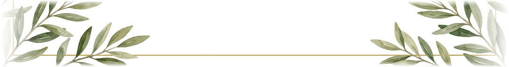

Convite
A Comandante-Geral da Polícia Militar de Roraima Cel Valdeane convida os policiais militares, servidores civis, familiares e amigos para participarem do Culto Ecumênico em ação de graças pelos 82 anos da Corporação.
Anfitriã: Comandante-Geral da PMRR, Cel QOC PM Valdeane Alves de Oliveira
03 de novembro de 2026 (terça-feira), 08h30
Templo da Faculdade Catedral — Rua Waldner Jorge Ferreira da Silva, nº 100 – Caçari, Boa Vista/RR.
Programação
- 08h00 Recepção das autoridades
- 08h30 Início da solenidade
- 10h00 Encerramento
Uniforme
- Policiais militares de serviço: o de dotação da Unidade.
- Policiais militares de folga: traje à paisana (passeio).
- Convidados civis: passeio.
Palavra da Comandante-Geral
Cel QOC PM Valdeane Alves de Oliveira
Celebrar 82 anos da Polícia Militar de Roraima é, antes de tudo, agradecer a Deus. Pela proteção sobre cada policial que sai de casa para servir, pelas famílias que sustentam a nossa missão e pela confiança do povo roraimense. Que este culto renove em nós a fé, a união e o compromisso de servir e proteger.

Formalidade
Chegada das autoridades
Mestre de cerimônias
Senhoras e senhores, bom dia!
Anunciamos a chegada a esta solenidade da Comandante-Geral da Polícia Militar de Roraima, Cel QOC PM Valdeane Alves de Oliveira, e do Subcomandante-Geral da PMRR, Cel QOC PM Igo Maiko Evangelista.
Registramos ainda a presença das demais autoridades presentes.
Finalidade
Mestre de cerimônias
Em agradecimento a Deus, a Polícia Militar de Roraima reúne sua tropa, familiares, amigos e autoridades para, juntos, celebrar e louvar a Deus pelo octogésimo segundo aniversário da Instituição.
“O Senhor é quem te guarda; o Senhor é a tua sombra à tua direita. O Senhor guardará a tua entrada e a tua saída, desde agora e para sempre.”Salmo 121:5, 8
Sob as bênçãos do Deus Altíssimo e com a permissão da Comandante-Geral, Cel QOC PM Valdeane Alves de Oliveira, daremos início a este culto de comunhão.
Reunidos em um só espírito de comunhão e gratidão, celebramos neste momento o aniversário da PMRR, renovando os laços de fé, fraternidade e unidade da nossa Corporação. Policiais militares, familiares e convidados formam a grande família da Polícia Militar de Roraima, sustentada por valores sólidos que norteiam a nossa vida pessoal e o nosso dever profissional.
Agradecemos a Deus pela proteção divina concedida aos homens e mulheres que servem ao Estado de Roraima e buscamos neste culto a renovação da esperança e o fortalecimento do respeito mútuo. Confiantes na direção do Senhor, seguimos firmes em nossa missão, certos de que a união da nossa tropa e o amparo às nossas famílias mantêm a nossa instituição forte e abençoada.
Honras militares
Todos de pé
Serão prestadas as honras militares ao Grande Eterno Criador do Universo, o Senhor nosso Deus.
Cerimônia Religiosa
Oração inicial
2º Ten PM Enéas Farias Teodósio, pastor evangélico
Oração.
Breve histórico da PMRR
Vídeo institucional
Vídeo de inspiração de fé, reconstruindo fatos reais da Instituição.
Louvor
Pr. Felipe Pinel, Igreja Vida Church, com a Banda de Música da PMRR
“Tudo quanto tem fôlego louve ao Senhor.”Salmo 150:6
Repertório
1Raridade / Tá chorando por quê (medley)
Raridade
Não consigo ir além do teu olharTudo o que eu consigo é imaginarA riqueza que existe dentro de você
O ouro eu consigo só admirarMas te olhando eu posso a Deus adorarSua alma é um bem que nunca envelhecerá
O pecado não consegue esconderA marca de Jesus que existe em vocêO que você fez ou deixou de fazerNão mudou o início, Deus escolheu você
Sua raridade não está naquilo que você possuiOu que sabe fazerIsso é mistério de Deus com você
Você é um espelhoQue reflete a imagem do SenhorNão chore se o mundo ainda não notouJá é o bastante Deus reconhecer o seu valorVocê é preciosoMais raro que o ouro puro de OfirSe você desistiu, Deus não vai desistirEle está aqui pra te levantar se o mundo te fizer cair
Repete estrofes 2 a 4 e o refrão; refrão final 2x
Anderson Freire
Tá chorando por quê?
Tá chorando por quê?Se você tem um DeusQue cuida de você, oh, ohE jamais te esqueceu
Ele sabe de tudoQue você tá passandoE mandou te dizerQue Ele está cuidando
Lembra de onde você veioE aonde que você chegouLembra de todos os livramentosQue você já passou
Nem era pra você tá aquiMas Deus falou assimEsse aí, vou levantarE onde colocar a mão, Eu vou abençoar
Não choreQuem cuida de você não dormeLevantaTem muita gente que te amaDeus mandou te dizer, que vai acontecerDeus mandou te falar, que tudo vai passar
Repete estrofes 3 e 4 e o refrão; refrão final 2x, terminando em "Que tudo vai passar"
Preto no Branco
2Com muito louvor
Deus não rejeita oraçãoOração é alimentoNunca vi um justo sem respostaOu ficar no sofrimento
Basta somente esperarO que Deus irá fazerQuando Ele estende suas mãosÉ a hora de vencer
Então louve, simplesmente louveTá chorando, louvePrecisando, louveTá sofrendo, louveNão importa, louveTeu louvor invade o céu
Deus vai na frente, abrindo caminhoQuebrando as correntes, tirando os espinhosOrdena aos anjos pra contigo lutarEle abre as portas pra ninguém mais fecharEle trabalha pra o que nele confiaCaminha contigo de noite ou de diaErga suas mãos, sua bênção chegouComece a cantar com muito louvorCom muito louvor, com muito louvorCom muito louvor
A gente precisa entenderO que Deus está falandoQuando Ele fica em silêncioÉ porque está trabalhando
Repete estrofe 2, pré-refrão e refrão.
Com muito louvor, com muito louvorCom muito louvor, com muito louvorCom muito louvor, com muito louvorCom muito louvor, com muito louvorCom muito louvor, com muito louvor
Com muito louvor adore ao SenhorCom muito louvor exalte ao SenhorCom muito louvor cante ao SenhorCom muito louvor
3Noites traiçoeiras
Deus está aqui neste momentoSua presença é real em meu viverEntregue sua vida e seus problemasFale com Deus, Ele vai ajudar você
Oh, oh, Deus te trouxe aquiPara aliviar os teus sofrimentosOh, oh, é Ele o autor da FéDo princípio ao fimEm todos os teus tormentos
E ainda se vier noite traiçoeiraSe a cruz pesada for, Cristo estará contigoE o mundo pode até fazer você chorarMas Deus te quer sorrindo
Seja qual for o seu problemaFale com Deus, Ele vai ajudar vocêApós a dor vem a alegriaPois Deus é amor e não te deixará sofrer
Pré-refrão e Refrão 2x; termina em "Mas Deus te quer sorrindo" repetido
Padre Marcelo Rossi
4Em teus braços
Seguro estou nos braçosDaquele que nunca me deixouSeu amor perfeito sempre esteve repousado em mim
E se eu passar pelo valeAcharei conforto em Teu amorPois eu sei que és aquele que me guardaMe guardas
Em Teus braços é meu descansoEm Teus braços é meu descansoEm Teus braços é meu descansoEm Teus braços é meu descanso
Repete estrofes 1 e 2 e o refrão 2x
Recaio em Tua graçaRecaio de novo em Tuas mãosRecaio em Tua graçaRecaio de novo em Tuas mãos
Repete.
Estrofe 2 e refrão: "Em Teus braços é meu lugar seguro, meu escudo"
O toque mais puroO amor mais seguro do mundoO toque mais puroO amor mais seguro do mundo é o Teu, Jesus
Repete.
O toque mais puroO amor mais seguro do mundoÉ do meu AbbaÉ do meu Abba
Laura Souguellis
5Escudo / Sou um milagre (medley)
Escudo
Por toda a minha vidaOh Senhor, Te louvareiPois meu fôlego é a Tua vidaE nunca me cansarei
Posso ouvir a Tua vozÉ mais doce do que o melQue me tira desta covaE me leva até o céu
Já vi fogo e terremotosVento forte que passouJá vivi tantos perigosMas Tua voz me acalmou
Tu dás ordem às estrelasE ao mar, os seus limitesEu me sinto tão seguroNo teu colo, oh, Altíssimo
Não há ferrolhosNem portas que se fechem diante da Tua vozNão há doenças, nem culpaQue fiquem de pé diante de nósE a tempestade se acalmaNa voz daquele que tudo criouPois Tua palavra é puraEscudo para os que n'Ele creem
Sou um Milagre
Espírito, EspíritoQue desce como fogoVem como em PentecostesE enche-me de novo
Eu navegareiNo oceano do EspíritoE ali adorareiAo Deus do meu amor
Eu adorareiAo Deus da minha vidaQue me compreendeuSem nenhuma explicação
Espírito, EspíritoQue desce como fogoVem como em PentecostesE enche-me de novo
Enche-meAté transbordarDerrama a Sua glóriaDerrama a Sua glóriaEnche-me, DeusEnche-me, DeusEnche-me, DeusEnche-me
Então vem me incendiarMeu coração é Teu altarQuero ouvir o som do céuTua Glória contemplarTe damos honraTe damos glóriaTeu é o poderPra sempre, amémEntão vem me incendiarMeu coração é Teu altarQuero ouvir o som do céuTua Glória contemplar
Voz da Verdade
6Jó / Não pare (medley)
Jó
Jó, como pode ainda adorarSe não tem motivos pra cantar?Abandona esse Deus e morre
Mas não o adoro pelo que Ele fazNem menos por bens materiaisEu o adoro pelo que Ele éEu sou d'Ele, tudo é d'Ele
Jó, você não tem motivosPerdeu os seus bens, seus filhos, seus amigosO que você vai fazer?
Eu vou adorar, simplesmente adorarEu vou adorar
Deus me deu, Deus tomouBendito seja o nome do Senhor!A Ele a glória, a Ele a honra e o louvor
Repete estrofes 1 a 3, pré-refrão e refrão
A Ele a glóriaA Ele a glóriaA Ele a glóriaA Ele a glóriaA Ele a glória (oh, a Ele a glória)A Ele a glória (Ele merece toda a glória)A Ele a glóriaPra sempre, amémAmém!
Deus me deu, Deus tomouBendito seja o nome do Senhor!A Ele a glória, a Ele a honra e o louvorA Ele seja dado o louvorTe damos todo o louvor, Senhor!
Composição: Delino Marçal · Intérprete: Midian Lima
Não pare
AmanheceuNada pesqueiParecia ser apenas mais um diaComo qualquer outro
Estava cansadoSem forças, desanimadoDecidida a largar tudo e parar
Deus conhece tua estruturaSabe o que está fazendoMesmo que seja difícilNão pares, Ele está vendo
Colheu todas tuas lágrimasE mandou a ti falarPegue o que Ele te entregouE volte para o mar que é o teu lugar
Quem mandou largar a rede?Quem mandou você parar?Volte para o mar altoNo lugar da tua vergonha, Eu vou te honrar
Repete, terminando em: Filho, Eu vou te honrar.
Repete estrofes 3 e 4 e o refrão 2x
Ó, filho, a noite já passouA tua hora chegouPegue a tua rede e volte para o marVou te esperar no mar
Não é hora de pararDeus contemplou teu caminharEu sei, é difícil prosseguir
Quando tudo lhe faltarEsse cenário vai mudarA tua hora chegaráHá um tempo pra tudo
Quem mandou largar a rede?Quem mandou você parar?Volte para o mar altoNo lugar da tua vergonha, Eu vou te honrar
Repete, terminando em: Filho, Eu vou te honrar.
Composição: Priscila de Paula · Intérprete: Midian Lima
Mensagem do Pastor — Verdadeiros Defensores
Pr. Emival Silva, Igreja Verbo da Vida
Versículo de abertura: “Bem-aventurados os que ouvem a Palavra de Deus e a guardam.” (Lucas 11:28)
“Acampar-me-ei ao redor da minha casa para defendê-la contra forças militantes, para que ninguém passe, nem volte; que não passe mais sobre eles o opressor; porque, agora, vejo isso com os meus olhos.”Zacarias 9:8
Louvor da Banda da PMRR — Eu só quero adorar
Todos acompanham
Eu não sei o que Ele viu em mimNão entendo por que me amouEu não sou o que devia serMesmo assim, Ele me abraçou
Sou pequeno, Ele, tão grande éEu sou falho, Ele é fielO que eu merecia era morrerMas Ele me prometeu o céu
Eu só quero adorar, por isso estou aquiE se eu não adorar, falta algo em mimEu jamais saberei por que me escolheuMas de uma coisa eu seiTudo que eu tenho Ele me deu
Repetem-se as duas estrofes e o refrão.
Eu só quero adorar, por isso estou aquiE se eu não adorar, falta algo em mimEu jamais saberei por que me escolheuMas de uma coisa eu seiTudo que eu tenho Ele me deuTudo que eu tenho Ele me deuTudo que eu tenho Ele me deu
Mensagem do Padre
2º Ten Capelão do Exército Brasileiro, Padre Luiz Henrique Pereira Júnior
1ª Brigada de Infantaria de Selva (Brigada Lobo D’Almada).
“Lâmpada para os meus pés é tua palavra, e luz para o meu caminho.”Salmo 119:105
Consagração dos utensílios castrenses
Padre Luiz Henrique, Pr. Emival Silva e autoridades eclesiásticas
“E trouxe para a Casa de Deus as coisas consagradas por seu pai e as coisas que ele mesmo tinha consagrado: ouro, prata e utensílios. E não houve guerra.”II Crônicas 15:18-19
Entrada dos símbolos castrenses da PMRR.
Ato Final
Fala da Comandante-Geral
Cel QOC PM Valdeane Alves de Oliveira
Neste momento, a Comandante-Geral faz uso da palavra.
Oração da PMRR
Subcomandante-Geral da PMRR, Cel QOC PM Igo Maiko Evangelista
Senhor, vós sabeis quão árdua é a minha missão, e quase sempre incompreendida pelos homens.
É triste, Senhor, arriscar a minha vida e não ser reconhecido, e algumas vezes criticado ou injuriado.
É triste, Senhor, despedir-me do lar e não ter a certeza de a ele retornar.
Mas é consolador, Senhor, o sentimento do dever cumprido e a certeza de que minha figura anônima evitou um crime ou salvou uma vida.
Dai-me, Senhor, a vossa graça para que possa honrar a minha farda e renovar diariamente perante vós o juramento de defender a sociedade mesmo com o risco da própria vida.
Todos: Amém.
Canção da Polícia Militar de Roraima
Todos cantam, com a Banda de Música da PMRR
Guardiã na vanguarda brasileiraEstás no podium em Pacaraima,Do nosso Brasil a mais bela,Polícia Militar de Roraima.
Às margens do Rio Branco,Um povo leal descansa,Tens patrulhas a simbolizar,Tua presença da segurança.
Da ordem pública serás eterna escola,Com esplendor e civismo varonil,Nossa farda é o orgulho que vestimos,Força nobre a serviço do Brasil.
Tua bandeira será sempre hasteada,Mesmo longe sem temer.Tua missão é ancestral,És oriunda da Guarda Territorial.
Do Forte São Joaquim,Têm origem tuas medalhas.Na paz ou na guerra sempre temos,Dia a dia uma batalha.
Da ordem pública serás eterna escola,Com esplendor e civismo varonil,Nossa farda é o orgulho que vestimos,Força nobre a serviço do Brasil.
Letra: 3º Sgt PM Antônio Varlindo Lima dos Reis
Encerramento
Mestre de cerimônias
Encerrando este culto solene alusivo ao aniversário da PMRR, a Comandante-Geral da Polícia Militar, Cel QOC PM Valdeane Alves de Oliveira, agradece a presença de todos e convida as autoridades e convidados para tirarmos a foto oficial e, em seguida, degustar o buffet matinal, que será servido na lateral.
“Que o Senhor nosso Deus abençoe e proteja a todos.”